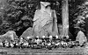
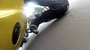
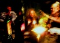

Deprived
Written in 2005 as a prediction of returning to the deprived times of the 1980's, Deprived is written about the deprivation of the common man by the ruling elites
Bilderberg Age
Bilderberg Age was released on the anniversary of the assassination of JFK and is a direct reference to his last public speech which is also used in the song
Silk Vicky
The first writing collaboration between Gaz and Neo, Silk Vicky was written as a humourous view of sexually predatorial woman
Raise a glass
Written by Gaz, this song is a heart felt reminder of those that we've lost but also a strong reminder of people in life who often go unsung
Rubberside down
Rubberside down was written on the back of a fireblade, whilst travelling at unmentionable speeds and sings about the brotherhood between bikers and the feeling of being on two wheels
Drunk double
Drunk double is a commentary on the idea of your drunk self being an alter ego or different personality than your own, and acknowledging it as a person humerously
Play and download all the songs for free NOW!